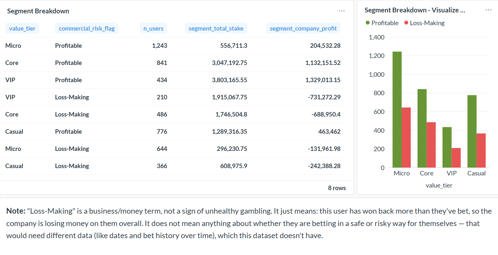

SQL + BI portfolio project analyzing 100,000 simulated sports bets from 5,000 users to answer a commercial question: which users generate the most value, and which are actually losing the business money?


In my internship Project with EY. i used Python to explore, clean and visualize the data.

In my internship Project with EY. i used PowerBI to visualize the data that i already cleaned with Python.

Credit / Data Analyst Aalysis
Analyzed the overall dataset to identify general observations, trends, interesting findings, and potential anomalies.
Compared the performance of the two onboarding months to determine which month performed better overall.
Analyzed PredictedProbabilityofDefault and other relevant fields to identify segments that performed better or worse.
Identified key patterns and differences between customer segments based on the available variables.

Data Exploration of Covid Data in SQL server.
we collected data from two different excels: Covid deaths and covid Vaccinations

Data visualisation with Tableau.
we used the covid data. key performance indicators: DeathCount, Country, Continent, Population Infected...

In this project we look at what variables effect the gross revenue from movies.
Python:Pandas,Seaborn,Numpy and matplotlib.pyplot